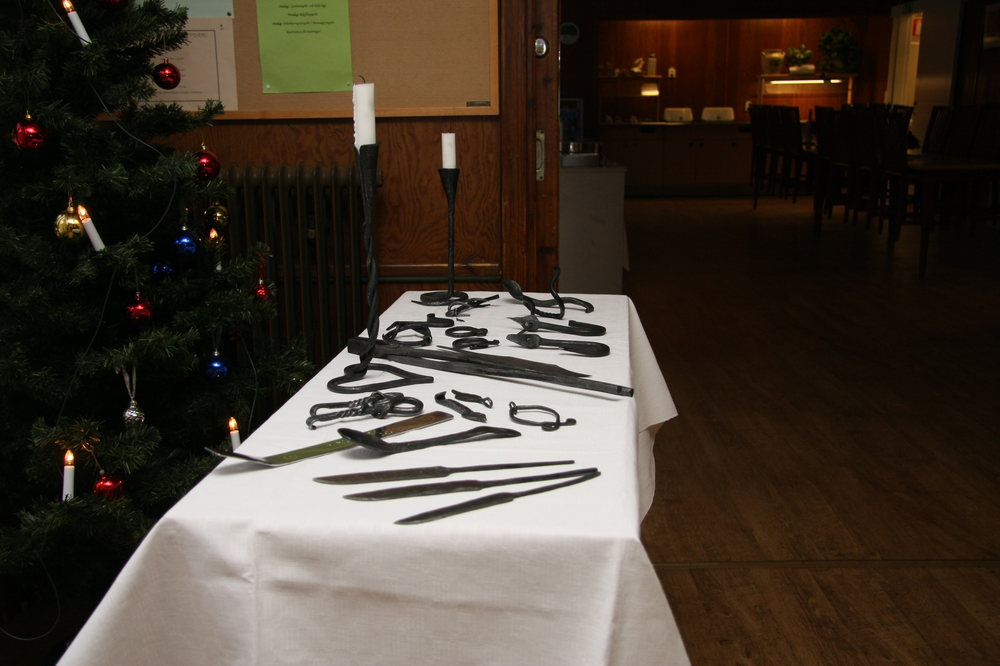
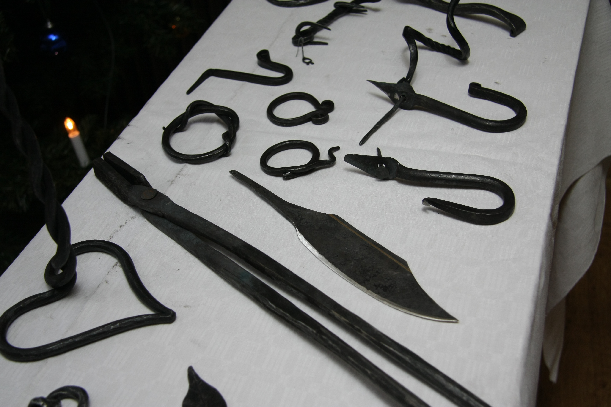
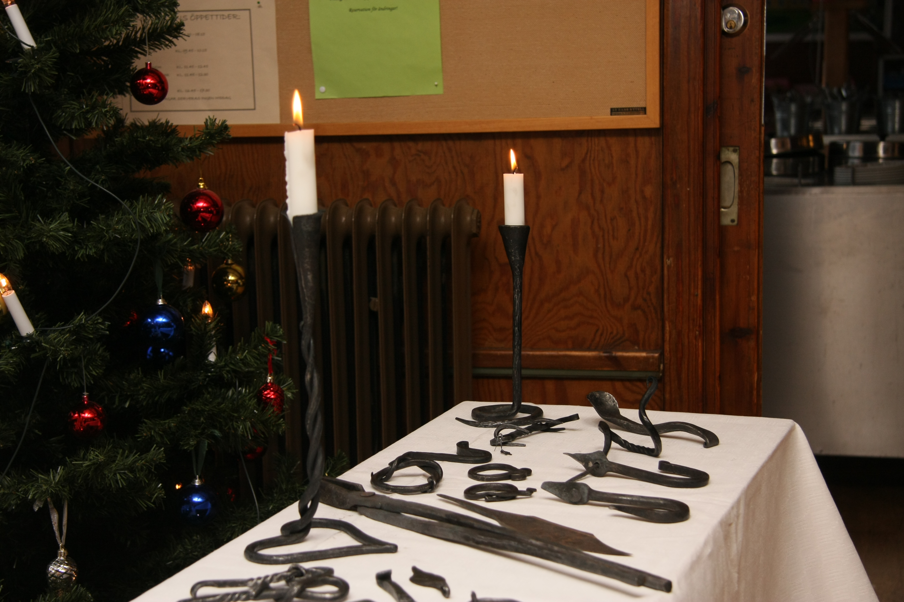
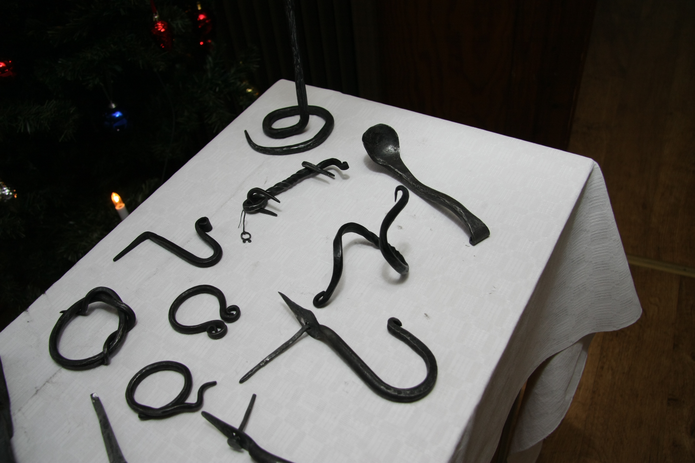
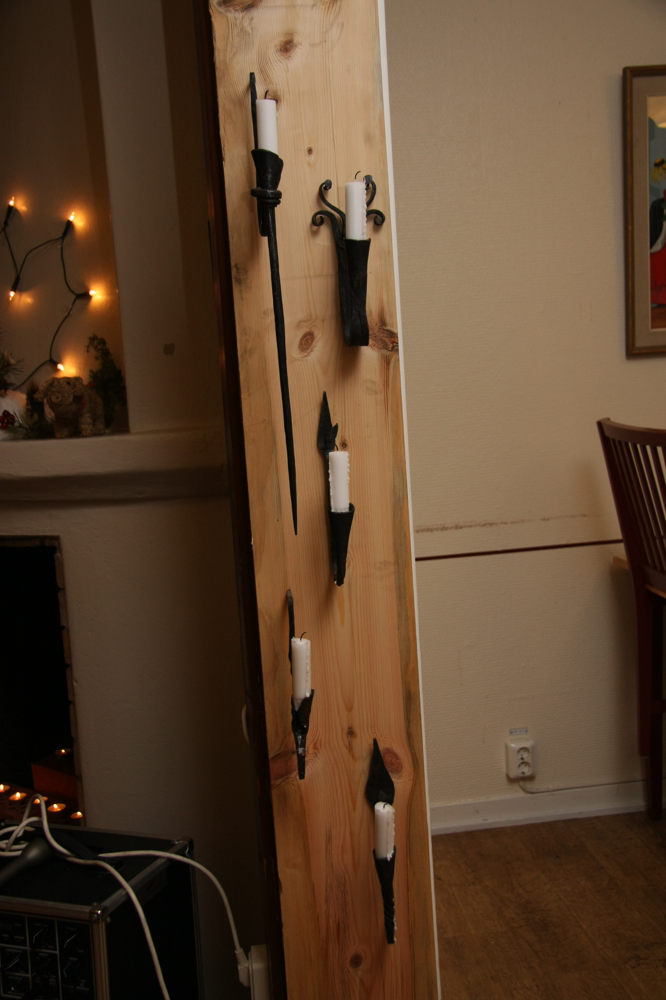
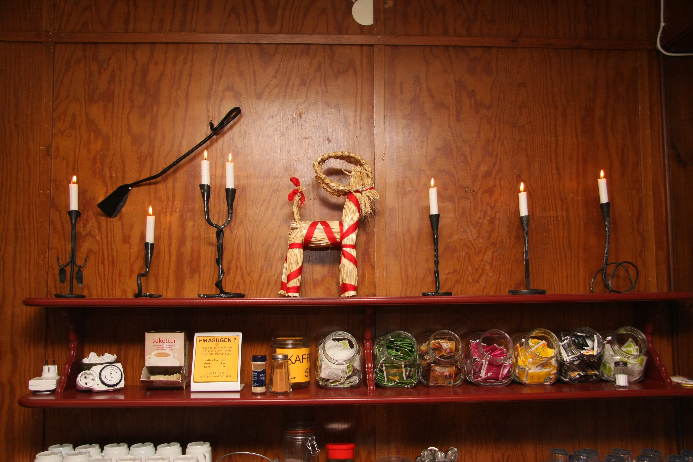

<div class="container1">
	<div id="breadcrumb">
		<ul>
			<li class="first">You Are Here</li>
			<li>&#187;</li>
			<li><a href="index.html">Home</a>
			</li>
			<li>&#187;</li>
			<li><a href="#" onClick="load('projects')">Projects</a>
			</li>
			<li>&#187;</li>			
			<li class="current"><a href="#">Yule</a>
			</li>
			<li>&#187;</li>
		</ul>
	</div>
	<br /> <br />

	<h1>Yule</h1>
	<div id="gallery" class="box">
		<ul>
			<li><a data-gal="prettyPhoto[yule]" href="work/jul/jul1.jpg" title="yule | exploring forms in metal">
			</a>
			</li>
			<li><a data-gal="prettyPhoto[yule]" href="work/jul/jul2.jpg" title="yule | exploring forms in metal">
			</a>
			</li>
			<li class="last"><a data-gal="prettyPhoto[yule]" href="work/jul/jul3.jpg" title="yule | exploring forms in metal">
			</a>
			</li>
			<li><a data-gal="prettyPhoto[yule]" href="work/jul/jul4.jpg" title="yule | exploring forms in metal">
			</a>
			</li>			
			<li><a data-gal="prettyPhoto[yule]" href="work/jul/jul5.jpg" title="yule | exploring forms in metal">
			</a>
			</li>
			<li  class="last"><a data-gal="prettyPhoto[yule]" href="work/jul/jul6.jpg" title="yule | exploring forms in metal">
			</a>
			</li>			
		</ul>
		<br class="clear" />
	</div>

	<br />

	<div class="clear"></div>
</div>

<script type="text/javascript" charset="utf-8">  
  // Needed for prettyPhoto to work after ajax load. Why is not the callback function enough?
  $(document).ready(function(){
	  	postInject();
	});  
</script>
